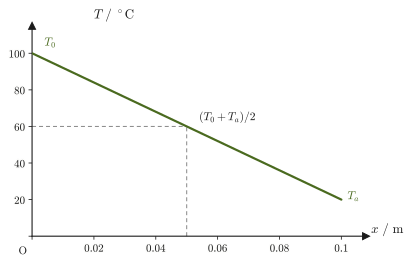
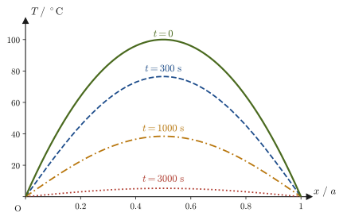
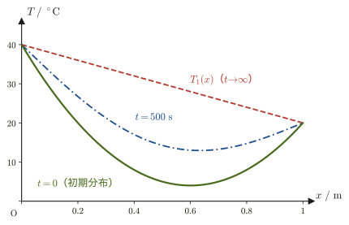

第33章熱伝導方程式
金属のスプーンと木のスプーンを同じ室温の場所に置いておいても，手で触れると金属の方が冷たく感じる．これは金属の方が「熱をよく伝える」ため，指先の熱が金属を通して急速に奪われるからである．では，「熱をよく伝える」とは，数式でどう表せるのだろうか．棒の一方の端を熱し，もう一方を冷やし続けたとき，棒の中の温度分布はどのように時間変化し，最終的にどんな形に落ち着くのだろうか．この章では，これらの問いに答える熱伝導方程式（heat conduction equation）を，微小区間に着目して「入ってきた熱」と「出ていった熱」を数える（帳簿の収支をつけるのと同じ）という考え方で導出し，つづいてそれを実際に解く．
熱伝導方程式は，時間についても位置についても微分を含む偏微分方程式（partial differential equation）であり，本教材でここまで扱ってきた常微分方程式（力学の運動方程式など，独立変数が時刻 $t$ だけのもの）とは種類が異なる．しかし，解き方の骨格は実は非常に単純である．「$T(x,t)=X(x)\,\Theta(t)$ という，位置だけの関数と時刻だけの関数の積の形で解を探す」という変数分離法（separation of variables）を使うと，1本の偏微分方程式が，$x$ だけの常微分方程式と $t$ だけの常微分方程式という，見慣れた2本の常微分方程式に分解される．しかも，$x$ 側の常微分方程式は，実は第7章でばね振り子の運動方程式を解いたときと全く同じ形の方程式であり，そこで学んだ手法がそのまま使い回せる．変数分離で得られた無数の解を，境界条件・初期条件に合わせて足し合わせる（重ね合わせる）ときには，姉妹編「大学数学（AD 02）」で学んだフーリエ級数（Fourier series）が主役になる——任意の初期温度分布を，$\sin(n\pi x/a)$ という単純な波の形の重ね合わせとして表現するのである．
本章で扱う内容は，姉妹編「大学数学（AD 02）」第43章で一般的な手順として学んだ変数分離法を，具体的な物理量（熱伝導率 $\lambda$，比熱 $c$，密度 $\rho$）を伴う現実の問題に初めて適用する場面である．AD 02 で学んだ抽象的な解法が「実際に何を計算しているのか」を，ここで実感してほしい．
- フーリエの熱伝導法則と，微小区間における熱量の収支から，1次元の熱伝導方程式 $\pdiff Tt=\kappa^2\pdiff{^2T}{x^2}$（$\kappa^2$：熱拡散率）を導出すること
- 両端の温度が異なる定常状態（時間に依存しない解）を求めること
- 変数分離法により，熱伝導方程式を空間についての常微分方程式と時間についての常微分方程式に分解し，境界条件から許される解の形を場合分けして決めること
- フーリエ級数を使って初期条件を満たす重ね合わせを構成し，時間とともに温度分布がどう緩和していくかを求めること（初期温度分布が異なる2通りの具体例）
- フーリエ級数の高次の項（振動数の高いモード）ほど速く減衰するという，拡散現象に特有の性質を理解すること
記号についての注意：本章では，棒の断面積を $S$，定数を $A,B$，変数分離の定数を $\alpha$，質量密度を $\rho$ と書く．これらは熱力学の他の章（$S$ はエントロピー，$A$ はヘルムホルツエネルギー，$\alpha$ は熱膨張率）や電磁気学の章（$\rho$ は電荷密度）とは別の意味で使う．
もとにしたノート：望月泰英『物理学ノート 熱力学』 pp. 63–68．
33.1 熱伝導方程式の導出
断面積 $S\ [\mathrm{m^2}]$ の一様な棒（ケーブル）が $x$ 軸に沿って置かれているとし，棒の一方の端（$x=0$）の温度を $T_0$，もう一方の端（$x=a$）の温度を $T_a$ とする．ここでは $T_0\gt T_a$，すなわち $x=0$ 側が高温であるとしよう．高校物理でも「熱は高温から低温へ流れる」こと，そして「熱伝導で流れる熱量は，温度差と断面積に比例し，厚さに反比例する」ことは習っているはずだが，ここではそれを定量的な式にする．棒の中の温度分布を，位置 $x$ と時刻 $t$ の関数 $T(x,t)$ として表す（図33.1）．
断面積 $S$ を通って，時間 $t$ の間に熱量 $Q$ が流れたとする．経験的に知られているのは，次の3つの比例関係である：熱量 $Q$ は，熱が流れる時間 $t$ が長いほど大きく（2倍の時間放置すれば2倍の熱が流れる），断面積 $S$ が大きいほど大きく（2倍の太さの棒なら2倍の熱が流れる），そして両端の温度差がつくる温度勾配 $\bigl|(T_a-T_0)/(a-0)\bigr|$ が急なほど大きい，という直線的な比例関係である．この3つを合わせると，
$$ Q\ \propto\ t\cdot S\cdot\left|\frac{T_a-T_0}{a-0}\right| $$となる．ここで比例定数を $\lambda$ とおくと（$T_0\gt T_a$ なので絶対値を外して符号を合わせ，$T_0-T_a$ の形に書く），
\begin{equation} Q=\lambda\cdot tS\cdot\frac{T_0-T_a}{a-0} \label{eq:33-macro-law} \end{equation}という関係が得られる．$\lambda$ を熱伝導率（thermal conductivity）という．式 \eqref{eq:33-macro-law} を $\lambda$ について解くと $\lambda=Qa/\bigl(tS(T_0-T_a)\bigr)$ であり，単位は $\mathrm{J\cdot m/(s\cdot m^2\cdot K)}=\mathrm{W/(m\cdot K)}$ である（$\mathrm{J/s}=\mathrm{W}$）．また，単位面積・単位時間あたりに流れる熱量 $Q/(St)\ [\mathrm{W/m^2}]$ を熱流束（heat flux）という．式 \eqref{eq:33-macro-law} は「棒の中の温度分布が両端の間で一直線（一様な勾配）である」という特別な状況（実は33.2節で求める定常状態がまさにこれにあたる）を仮定した，いわば平均化された関係である．一般の（時間的にも位置的にも変化する）温度分布 $T(x,t)$ に対しては，勾配 $(T_a-T_0)/(a-0)$ を局所的な偏微分 $\partial T/\partial x$ で置き換えた，次の局所的な法則が成り立つと考える．
数学の道具：偏微分の記号 $\partial$ の読み方
温度 $T(x,t)$ は，位置 $x$ と時刻 $t$ という2つの変数の関数である．このように変数が2つ以上ある関数を，「1つの変数だけを動かし，ほかの変数は止めたまま」微分したものを偏微分（partial derivative）という（大学数学 第6章 6.2節）．記号 $\partial$（パーシャル）は $\dd$ の丸まった形で，「ほかの変数を止めた微分」であることを表す．
- $\pdiff Tx$（パーシャル・ティー・パーシャル・エックス）：時刻 $t$ を止めて $x$ だけを動かしたときの $T$ の変化率．ある瞬間の温度分布のグラフの傾き（温度勾配）である．単位は $\mathrm{K/m}$．
- $\pdiff Tt$：位置 $x$ を止めて時刻だけを進めたときの $T$ の変化率．その場所の温度がどれだけの速さで上がっているかを表す．単位は $\mathrm{K/s}$．
- $\pdiff{^2T}{x^2}$：$\pdiff Tx$ をもう一度 $x$ で偏微分したもの．グラフの傾きの変化，すなわちグラフの曲がり具合である．単位は $\mathrm{K/m^2}$．
法則33.1 フーリエの熱伝導法則
物質中の位置 $x$，時刻 $t$ における温度を $T(x,t)$ とする．$x$ の正の向きに流れる熱流束（単位面積・単位時間あたりに流れる熱量）$q(x,t)\ [\mathrm{W/m^2}]$ は，その点での温度勾配 $\partial T/\partial x$ に比例し，
\begin{equation} q=-\lambda\,\pdiff Tx \label{eq:33-fourier-law} \end{equation}と表される．$\lambda\ [\mathrm{W/(m\cdot K)}]$ は物質ごとに決まる正の定数で，熱伝導率という．負号がついているのは，熱が温度の高い方から低い方へ流れるからである．たとえば $x$ が増すと温度が下がる場所（$\partial T/\partial x\lt0$）では $q=-\lambda\,\partial T/\partial x\gt0$ となり，熱は $x$ の正の向きへ流れる．逆に $\partial T/\partial x\gt0$ の場所では $q\lt0$ で，熱は $x$ の負の向きへ流れる——高校物理で「熱は高温から低温へ流れる」と習った内容を，勾配を使って定量的に書き直したものが式 \eqref{eq:33-fourier-law} である．
イメージ：なぜ勾配に比例するのか
断面積 $S$ を一定にしたまま，両端の温度差を2倍にすれば，運ばれる熱量もほぼ2倍になる——これは経験的な事実であり，フーリエの法則 \eqref{eq:33-fourier-law} はこの比例関係を局所的な言葉（微小区間での温度差，すなわち勾配）で表現したものである．勾配が急なほど（狭い範囲に大きな温度差が押し込められているほど）熱の流れは速い，という直感は，坂が急なほど物が転がり落ちる速さが増すイメージに近い．
それでは，フーリエの法則 \eqref{eq:33-fourier-law} と，熱量の保存則（エネルギー保存則の一種）から，熱伝導方程式を導出しよう．
導出の前提
次の3つを仮定する．(1) 棒の側面は断熱されていて，熱は棒の軸方向（$x$ 方向）にだけ流れる．(2) 熱伝導率 $\lambda$，比熱 $c$，密度 $\rho$ は場所によらず一定である．(3) 棒の中に熱源（発熱体）はない．現実の棒では側面から空気へも熱が逃げるが，その効果は本章では考えない（まわりの空気まで含めた場合は，関連シミュレーターで調べられる）．
導出：熱伝導方程式
棒の中の任意の位置 $x$ を点 $\mathrm{A}$ とし，そこから微小距離 $\dd x$ だけ離れた位置 $x+\dd x$ を点 $\mathrm{B}$ とする（図33.1）．点 $\mathrm{A}$，点 $\mathrm{B}$ をそれぞれ通る断面を考え，微小時間 $\dd t$ の間に，点 $\mathrm{A}$ の断面を通って区間 $[x,x+\dd x]$ に流れ込む熱量を $\dd'Q_{\mathrm{A}}$，点 $\mathrm{B}$ の断面を通って流れ出す熱量を $\dd'Q_{\mathrm{B}}$ とする（熱量 $Q$ は「今どんな状態か」で決まる量ではなく，熱の移動という過程の量なので，その微小量は $\dd Q$ ではなく $\dd'Q$ と書く．第26章 26.6節）．どちらもフーリエの法則 \eqref{eq:33-fourier-law} により（熱流束 $\times$ 面積 $\times$ 時間 $=$ 熱量なので），
$$ \dd'Q_{\mathrm{A}}=\lambda S\left(-\pdiff Tx\right)_{\!\mathrm{A}}\dd t,\qquad \dd'Q_{\mathrm{B}}=\lambda S\left(-\pdiff Tx\right)_{\!\mathrm{B}}\dd t $$と書ける．ここで，$(\ \cdot\ )_{\mathrm{A}}$ は「点 $\mathrm{A}$（位置 $x$）で評価した量」，$(\ \cdot\ )_{\mathrm{B}}$ は「点 $\mathrm{B}$（位置 $x+\dd x$）で評価した量」を表す．$\mathrm{B}$ は $\mathrm{A}$ からわずか $\dd x$ しか離れていないので，$(\partial T/\partial x)_{\mathrm{B}}$ を $(\partial T/\partial x)_{\mathrm{A}}$ のまわりでテイラー展開（大学数学 第4章 4.2節）すると，
$$ \left(\pdiff Tx\right)_{\!\mathrm{B}}=\left.\pdiff Tx\right|_{x+\dd x} \approx\left(\pdiff Tx\right)_{\!\mathrm{A}}+\left(\pdiff{^2T}{x^2}\right)_{\!\mathrm{A}}\dd x+\underbrace{\cdots}_{\dd x^2\text{以上，無視}} $$となる（$\dd x$ が微小なので，$\dd x^2$ 以上の項は無視できる——1次近似である）．これを $\dd'Q_{\mathrm{B}}$ の式に代入すると，
$$ \dd'Q_{\mathrm{B}}=-\lambda S\left[\left(\pdiff Tx\right)_{\!\mathrm{A}}+\left(\pdiff{^2T}{x^2}\right)_{\!\mathrm{A}}\dd x\right]\dd t $$を得る．区間 $[x,x+\dd x]$（体積 $S\,\dd x$）に着目すると，微小時間 $\dd t$ の間にこの区間が正味で得る熱量は，「$\mathrm{A}$ から流入した熱」から「$\mathrm{B}$ から流出した熱」を引いたものだから，
$$ \dd'Q=\dd'Q_{\mathrm{A}}-\dd'Q_{\mathrm{B}} =\lambda S\left(-\pdiff Tx\right)_{\!\mathrm{A}}\dd t-\left\{-\lambda S\left[\left(\pdiff Tx\right)_{\!\mathrm{A}}+\left(\pdiff{^2T}{x^2}\right)_{\!\mathrm{A}}\dd x\right]\dd t\right\} $$右辺の $-\lambda S(\partial T/\partial x)_{\mathrm{A}}\,\dd t$ の項どうしが打ち消し合い，
\begin{equation} \dd'Q=\lambda S\left(\pdiff{^2T}{x^2}\right)_{\!\mathrm{A}}\dd x\,\dd t \qquad\cdots\ ① \label{eq:33-dQ1} \end{equation}だけが残る．これが，区間 $[x,x+\dd x]$ が微小時間 $\dd t$ の間に正味で受け取る熱量である．流入する熱が流出する熱より多ければ（$\partial^2T/\partial x^2\gt0$），区間は熱を得る．単位を確かめておくと，$\mathrm{W/(m\cdot K)}\times\mathrm{m^2}\times(\mathrm{K/m^2})\times\mathrm{m}\times\mathrm{s}=\mathrm{W\cdot s}=\mathrm{J}$ となり，たしかに熱量の単位である．
一方，この区間が熱量 $\dd'Q$ を受け取ると，その分だけ内部エネルギー（＝温度）が上昇する．区間は薄いので，その中の温度はどこでも同じ値 $T(x,t)$ とみなしてよい．物質の密度を $\rho\ [\mathrm{kg/m^3}]$，比熱を $c\ [\mathrm{J/(kg\cdot K)}]$ とすると，区間の質量は $\rho S\,\dd x$ であり，温度が $\dd T$ だけ上昇するのに必要な熱量は，比熱の定義（熱量 $=$ 質量 $\times$ 比熱 $\times$ 温度変化）から，
\begin{equation} \dd'Q=c\cdot\rho S\,\dd x\cdot\dd T \qquad\cdots\ ② \label{eq:33-dQ2} \end{equation}である（比熱 $c$ の単位は $\mathrm{J/(kg\cdot K)}$——質量1 kgあたりの熱容量である）．時刻 $t$ から $t+\dd t$ までの間の区間の温度上昇 $\dd T$ は，$T$ を時刻 $t$ の関数と見て1次までテイラー展開すれば $\dd T\approx(\partial T/\partial t)\,\dd t$（温度の時間変化率に $\dd t$ を掛けたもの）と書ける．同じ区間・同じ時間に出入りする熱量なのだから，①と②は等しい：
$$ \lambda S\left(\pdiff{^2T}{x^2}\right)\dd x\,\dd t=c\rho S\,\dd x\cdot\pdiff Tt\,\dd t $$両辺に共通する $S$，$\dd x$，$\dd t$ を約分すると，
$$ \lambda\pdiff{^2T}{x^2}=c\rho\,\pdiff Tt $$となり，両辺を $c\rho$ で割ると，次の熱伝導方程式（heat conduction equation）が得られる：
\begin{equation} \pdiff Tt=\frac{\lambda}{c\rho}\,\pdiff{^2T}{x^2} \label{eq:33-heateq} \end{equation}（導出終わり）
イメージ：温度は「曲がり具合」で変わる
式 \eqref{eq:33-heateq} の右辺 $\partial^2T/\partial x^2$ は，温度分布のグラフの曲がり具合である．これが符号まで含めて何を意味するかを，3つの場合で見ておこう．(1) グラフが下に凸の「谷」（$\partial^2T/\partial x^2\gt0$）：その場所はまわりより温度が低く，両隣から熱が流れ込んで温度が上がる．(2) グラフが上に凸の「山」（$\partial^2T/\partial x^2\lt0$）：その場所はまわりより温度が高く，熱が両隣へ逃げて温度が下がる．(3) グラフが直線（$\partial^2T/\partial x^2=0$）：入ってくる熱と出ていく熱がちょうどつり合い，温度は変わらない——これが33.2節で求める定常状態である．つまり熱伝導方程式は，「山は削れ，谷は埋まって，温度のでこぼこがならされていく」ことを式で表したものである．曲がりが急なほど（$\partial^2T/\partial x^2$ の絶対値が大きいほど）ならされる速さも大きい．
式 \eqref{eq:33-heateq} の係数 $\lambda/(c\rho)$ は，温度がどれだけ速く空間的に均されていくかを表す量で，次のように定義する．
定義33.1 熱拡散率
$$ \kappa^2\equiv\frac{\lambda}{c\rho}\ \ [\mathrm{m^2/s}] $$を熱拡散率（thermal diffusivity）という．これを使うと，熱伝導方程式 \eqref{eq:33-heateq} は
\begin{equation} \pdiff Tt=\kappa^2\,\pdiff{^2T}{x^2} \label{eq:33-heateq-kappa} \end{equation}と書ける．$\kappa^2$ は「2乗」の形で書かれているが，これは1つの記号（1つの量）であって，$\kappa$ 自体に単独の意味があるわけではない——$\lambda/(c\rho)$ が常に正の量になることを式の見た目でも強調するための慣習的な書き方である．次元は $[\lambda]/([c][\rho])=\mathrm{(W/(m\cdot K))/((J/(kg\cdot K))\cdot(kg/m^3))=m^2/s}$ であり，たしかに右辺 $\kappa^2\,\partial^2T/\partial x^2$ の次元は $\mathrm{m^2/s}\times\mathrm{K/m^2}=\mathrm{K/s}$ となって，左辺 $\partial T/\partial t$ の次元（$\mathrm{K/s}$）と一致する．
注意：熱伝導率の記号について
本書では，熱伝導率を $\lambda$ と書く．$K$ という記号は，本書の第III部で体積弾性係数（第19章）としてすでに使われており，混同を避けるためである．なお，熱伝導率には $k$ や $\kappa$ を使う教科書もあるが，本書では $\kappa^2$ を熱拡散率 $\lambda/(c\rho)$ の記号に使うので，熱伝導率そのものには $\lambda$ を使うことに統一する．
いくつかの物質の熱伝導率 $\lambda$ の値を表33.1に示す．金属は熱伝導率が大きく（熱をよく伝える），気体やガラスは熱伝導率が小さい（熱を伝えにくい，つまり断熱材に向く）ことがわかる——これが，金属のスプーンが木やガラスのスプーンより「冷たく感じる」理由である．
| 物質 | 温度 $/\ {}^\circ\mathrm{C}$ | $\lambda\ /\ \mathrm{W\,m^{-1}\,K^{-1}}$ |
|---|---|---|
| 水 | 10 | 0.58 |
| 氷 | 0 | 2.2 |
| アルミニウム | 0 | 236 |
| 鉄（Fe） | 0 | 83.5 |
| 銅（Cu） | 0 | 403 |
| 銀（Ag） | 0 | 428 |
| 空気 | 0 | 0.0241 |
| ガラス | 常温 | 0.55〜0.75 |
注意：熱拡散率は熱伝導率だけでは決まらない
式 $\kappa^2=\lambda/(c\rho)$ からわかるように，温度分布がどれだけ速く均されるか（熱拡散率 $\kappa^2$）は，熱伝導率 $\lambda$ だけでなく，比熱 $c$ と密度 $\rho$ にも依存する．分母の $c\rho$（単位 $\mathrm{J/(m^3\cdot K)}$）は，体積 $1\ \mathrm{m^3}$ の物質の温度を $1\ \mathrm{K}$ 上げるのに必要な熱量，つまり体積あたりの熱容量である．媒体の体積熱容量 $c\rho$ が小さい（密度や比熱が小さい）ほど，同じ熱量でも温度が上がりやすいので，熱拡散率は高くなる——「熱を通しやすい（$\lambda$ が大きい）」ことと「温度がすぐに均される（$\kappa^2$ が大きい）」ことは，似ているが同じ意味ではない．例題33.3でこの違いを具体的に確認する．
例題33.1 銅とガラスを流れる熱流束の比
同じ厚さ，同じ断面積の銅の板とガラスの板があり，両面に同じ温度差をつけて定常状態にしたとする．表33.1の値（銅 $\lambda_{\mathrm{Cu}}=403\ \mathrm{W/(m\cdot K)}$，ガラス $\lambda_{\text{ガラス}}=0.60\ \mathrm{W/(m\cdot K)}$，表の範囲の中間値を採用）を用いて，銅を流れる熱流束はガラスを流れる熱流束の何倍か求めよ．
解答 定常状態では，式 \eqref{eq:33-macro-law} の熱流束 $q=Q/(St)=\lambda(T_0-T_a)/a$ は熱伝導率 $\lambda$ に比例する．厚さ $a$ と温度差 $T_0-T_a$ が両者で共通なので，熱流束の比はそのまま熱伝導率の比になる：
$$ \frac{q_{\mathrm{Cu}}}{q_{\text{ガラス}}}=\frac{\lambda_{\mathrm{Cu}}}{\lambda_{\text{ガラス}}}=\frac{403}{0.60}\approx 6.7\times10^{2} $$つまり，同じ温度差・同じ厚さでも，銅を流れる熱はガラスのおよそ670倍にもなる．表33.1のガラスの熱伝導率の範囲（$0.55$〜$0.75\ \mathrm{W/(m\cdot K)}$）を使うと，この比はおよそ540〜730倍の間で変わる．
例題33.2 窓ガラスを通って逃げる熱
厚さ $d=3.0\ \mathrm{mm}$，面積 $S=1.5\ \mathrm{m^2}$ の窓ガラス（$\lambda=0.60\ \mathrm{W/(m\cdot K)}$）の両面の温度差が $10\ \mathrm{K}$ に保たれ，定常状態になっている．(1) ガラスを流れる熱流束 $q$，(2) 窓全体を通って単位時間に逃げる熱量 $P$ を求めよ．
解答 (1) 式 \eqref{eq:33-macro-law} の熱流束 $q=Q/(St)=\lambda(T_0-T_a)/a$ で，厚さ $a$ を $d$ と読みかえる．$d=3.0\ \mathrm{mm}=3.0\times10^{-3}\ \mathrm{m}$ なので，
$$ q=\lambda\,\frac{\Delta T}{d}=0.60\ \mathrm{W/(m\cdot K)}\times\frac{10\ \mathrm{K}}{3.0\times10^{-3}\ \mathrm{m}}=2.0\times10^{3}\ \mathrm{W/m^2} $$（単位は $\mathrm{W/(m\cdot K)}\times\mathrm{K/m}=\mathrm{W/m^2}$ となり，熱流束の単位と一致する）．(2) 熱流束は単位面積あたりの量なので，面積を掛けて
$$ P=qS=2.0\times10^{3}\ \mathrm{W/m^2}\times1.5\ \mathrm{m^2}=3.0\times10^{3}\ \mathrm{W}=3.0\ \mathrm{kW} $$である．これは，ガラスの表面温度差が本当に $10\ \mathrm{K}$ に保たれる場合の値である．実際の窓では，ガラスの表面に接するごく薄い空気の層が熱の流れを大きく妨げるため，ガラスそのものの両面の温度差はずっと小さくなり，逃げる熱もこの値よりずっと小さい．
例題33.3 熱拡散率の比較 — 銅とガラス
銅（$\lambda_{\mathrm{Cu}}=403\ \mathrm{W/(m\cdot K)}$，密度 $\rho_{\mathrm{Cu}}\approx8960\ \mathrm{kg/m^3}$，比熱 $c_{\mathrm{Cu}}\approx385\ \mathrm{J/(kg\cdot K)}$，いずれも代表的な値）と，ガラス（$\lambda_{\text{ガラス}}\approx0.60\ \mathrm{W/(m\cdot K)}$，$\rho_{\text{ガラス}}\approx2500\ \mathrm{kg/m^3}$，$c_{\text{ガラス}}\approx840\ \mathrm{J/(kg\cdot K)}$，いずれも代表的な値）の熱拡散率 $\kappa^2=\lambda/(c\rho)$ をそれぞれ計算し，どちらが速く温度分布を均すか答えよ．
解答 まず体積熱容量 $c\rho$ を求めておく：
$$ c_{\mathrm{Cu}}\rho_{\mathrm{Cu}}=385\times8960\approx3.45\times10^{6}\ \mathrm{J/(m^3\cdot K)},\qquad c_{\text{ガラス}}\rho_{\text{ガラス}}=840\times2500=2.10\times10^{6}\ \mathrm{J/(m^3\cdot K)} $$定義33.1より，
$$ \kappa^2_{\mathrm{Cu}}=\frac{\lambda_{\mathrm{Cu}}}{c_{\mathrm{Cu}}\rho_{\mathrm{Cu}}}=\frac{403}{385\times8960}\approx1.17\times10^{-4}\ \mathrm{m^2/s} $$ $$ \kappa^2_{\text{ガラス}}=\frac{\lambda_{\text{ガラス}}}{c_{\text{ガラス}}\rho_{\text{ガラス}}}=\frac{0.60}{840\times2500}\approx2.9\times10^{-7}\ \mathrm{m^2/s} $$比をとると $\kappa^2_{\mathrm{Cu}}/\kappa^2_{\text{ガラス}}\approx4.1\times10^{2}$ であり，銅の熱拡散率はガラスのおよそ400倍である．熱伝導率の比（例題33.1でおよそ670倍）と，熱拡散率の比（およそ410倍）が異なる値になっていることに注目してほしい——ガラスは比熱こそ銅より大きい（$840$ 対 $385\ \mathrm{J/(kg\cdot K)}$）が，密度が銅の3割ほどしかなく，体積熱容量 $c\rho$ は銅の約 $0.61$ 倍（$2.10\times10^6$ 対 $3.45\times10^6$）である．ガラスの方が $c\rho$ が小さい分だけ温度が変わりやすく，熱拡散率の比は $\lambda$ の比（670倍）より小さい約410倍になる．つまり，「熱をどれだけ通すか（$\lambda$）」と「温度分布がどれだけ速く均されるか（$\kappa^2$）」は別の量であり，後者には体積熱容量 $c\rho$ も効いてくる（前の注意を参照）．
33.2 定常状態の解 — 両端の温度が異なる場合
熱伝導方程式 \eqref{eq:33-heateq-kappa} を実際に解いていこう．まず最も単純な場合として，棒の両端の温度をずっと一定に保った場合を考える．棒の両端を，一方は温度 $T_0$ の熱源に，もう一方は温度 $T_a$ の熱源に接触させ続け，十分に時間が経ったとしよう．このとき，棒のどの点の温度も，もはや時間とともに変化しなくなる——これを定常状態（steady state）という．
問題設定33.1 定常状態の境界条件
棒の両端の温度をそれぞれ
$$ T(0,t)=T_0,\qquad T(a,t)=T_a\qquad(T_0\gt T_a) $$に保つ（以後，33.1節の $T_0,T_a$ と同じく，$x=0$ の端の温度を $T_0$，$x=a$ の端の温度を $T_a$ と書く）．温度分布が時間に依存しない状態（定常状態）を考えるので，
$$ \pdiff Tt=0 $$である．
導出：定常状態の温度分布
定常状態では $\partial T/\partial t=0$ なので，熱伝導方程式 \eqref{eq:33-heateq-kappa} の左辺が0になる．$\kappa^2\neq0$ なので，右辺の $\partial^2T/\partial x^2$ も0でなければならない：
$$ \pdiff{^2T}{x^2}=0 $$定常状態では $T$ は時刻 $t$ に依存しないので，$T=T(x)$ という $x$ だけの関数になり，上式は常微分方程式 $\dd^2T/\dd x^2=0$ と同じことである．これを2回積分すると，
$$ T(x)=Ax+B\qquad(A,B:\text{積分定数}) $$という1次関数（直線）が得られる．境界条件 $T(0)=T_0,\ T(a)=T_a$ を代入すると，$T(0)=B=T_0$，$T(a)=Aa+T_0=T_a$ より $A=(T_a-T_0)/a$．したがって，
\begin{equation} T(x)=\frac{T_a-T_0}{a}\,x+T_0 \label{eq:33-steady} \end{equation}（導出終わり）
定理33.1 両端の温度が異なる定常状態
棒の両端を温度 $T_0$（$x=0$），$T_a$（$x=a$，$T_0\gt T_a$）に保ったまま十分に時間が経つと，棒の中の温度分布は時間に依存しない直線
\begin{equation} T(x)=T_0+\frac{T_a-T_0}{a}\,x \label{eq:33-steady-thm} \end{equation}に落ち着く．これは，「熱は高温から低温へ流れる」という高校物理の描像を，一様な棒について方程式から導いたもので，温度は場所について一定の割合（勾配）で下がっていく．

イメージ：定常状態では熱流束が一定
式 \eqref{eq:33-steady-thm} の温度分布に対して，フーリエの法則 \eqref{eq:33-fourier-law} を使うと，熱流束は $q=-\lambda\,\dd T/\dd x=\lambda(T_0-T_a)/a$ となり，位置 $x$ によらず一定である．これは当然のことで，もし場所によって熱流束が違えば，どこかの区間で「入ってくる熱」と「出ていく熱」がつり合わなくなり，その区間の温度が時間変化してしまう——それでは定常状態にならない．定常状態とは，まさに「どこでも熱流束が一定で，各微小区間の熱の出入りが完全につり合っている状態」のことなのである．
例題33.4 定常状態の温度分布の計算
長さ $a=0.10\ \mathrm{m}$ の棒の両端を，それぞれ $T_0=100\ {}^\circ\mathrm{C}$，$T_a=20\ {}^\circ\mathrm{C}$ に保った．定常状態になったとき，棒の中点（$x=a/2$）の温度を求めよ．
解答 式 \eqref{eq:33-steady-thm} に $x=a/2$ を代入すると，
$$ T\!\left(\frac a2\right)=T_0+\frac{T_a-T_0}{a}\cdot\frac a2=T_0+\frac{T_a-T_0}{2}=\frac{T_0+T_a}{2} $$となる．これは，直線的な温度分布ならではの結果で，中点の温度はちょうど両端の温度の平均になる．数値を代入すると，
$$ T\!\left(\frac a2\right)=\frac{100+20}{2}=60\ {}^\circ\mathrm{C} $$である．なお，この結果は棒の材質（$\lambda,c,\rho$）に一切よらないことに注意しよう——定常状態の「形」（直線であること）は熱伝導率などによらず，境界条件だけで決まる．熱伝導率が効いてくるのは，「どれだけ速くこの定常状態に落ち着くか」（緩和にかかる時間）や「そのときどれだけの熱流束が流れているか」の方であり，これは33.3節以降で調べる時間変化する解に現れる．
33.3 変数分離法とフーリエ級数 — 初期温度分布が与えられる場合1
33.2節で求めた定常状態は，「十分に時間が経ったあと」の温度分布であった．では，最初（時刻 $t=0$）にある温度分布を与えたとき，そこから定常状態に至るまでの途中の時間変化はどうなるだろうか．この節では，棒の両端を常に $0\ {}^\circ\mathrm{C}$ に保ちながら，時刻 $t=0$ での温度分布として，中央が最も高い山型（放物線）の分布を与えた場合を考える．
問題設定33.2 初期温度分布が与えられる場合1
境界条件（棒の両端を常に $0\ {}^\circ\mathrm{C}$ に保つ）：
$$ T(0,t)=0\ {}^\circ\mathrm{C},\qquad T(a,t)=0\ {}^\circ\mathrm{C}\qquad(\text{すべての }t\ge0\text{ で}) $$初期条件（時刻 $t=0$ での温度分布）：
$$ T(x,0)=\frac{4}{a^2}\,T_0\,x(a-x) $$である．この初期条件は，$x=0,a$ で $0$ になり，中点 $x=a/2$ で最大値 $T_0$ をとる（実際，$x=a/2$ を代入すると $\frac{4}{a^2}T_0\cdot\frac a2\cdot\frac a2=T_0$ となる）放物線状の分布である（図33.4の $t=0$ の曲線）．物理的には，棒の中央だけを局所的に熱してから，両端を氷水などで $0\ {}^\circ\mathrm{C}$ に固定した状況を表す（この節の $T_0$ は最大温度であり，33.2節のような「$x=0$ の端の温度」ではない）．
この問題を解くために，変数分離法（separation of variables）を使う．解 $T(x,t)$ が「$x$ だけの関数」と「$t$ だけの関数」の積という特別な形
$$ T(x,t)=X(x)\,\Theta(t) $$で書けると仮定して探す方法である．ここで $\Theta(t)$（大文字のシータ）は時間だけの関数であり，温度 $T(x,t)$ そのものとは別の関数である（混同しないよう，時間部分には $T$ でなく $\Theta$ を使う）．一般の解がすべてこの形をしているとは限らないが，後で見るように，この形の解を重ね合わせることで，任意の初期条件を満たす一般の解が作れる——大学数学 第43章 43.6節で述べられている一般的な手順と同じである．これを熱伝導方程式 \eqref{eq:33-heateq-kappa} に代入すると，
$$ X(x)\,\dot\Theta(t)=\kappa^2\,X''(x)\,\Theta(t) $$（ここで $\dot\Theta=\dd\Theta/\dd t$，$X''=\dd^2X/\dd x^2$——$X$ は $x$ だけの，$\Theta$ は $t$ だけの関数なので，偏微分ではなく常微分になる）．両辺を $\kappa^2 X(x)\Theta(t)$ で割ると，
\begin{equation} \frac{1}{\kappa^2}\frac{\dot\Theta}{\Theta}=\frac{X''}{X} \label{eq:33-sep} \end{equation}となる．ここで決定的に重要なのは，式 \eqref{eq:33-sep} の左辺は時刻 $t$ だけの関数（$x$ を含まない），右辺は位置 $x$ だけの関数（$t$ を含まない）だという点である．$x,t$ を独立に動かしても両辺は常に等しくなければならないのだから，これはもう「$x$ にも $t$ にもよらない同じ定数」でしかありえない．この定数を $\alpha$ とおく：
\begin{equation} \frac{1}{\kappa^2}\frac{\dot\Theta}{\Theta}=\frac{X''}{X}=\alpha\qquad(\alpha:\text{定数}) \label{eq:33-alpha} \end{equation}こうして，1本の偏微分方程式が，$\Theta(t)$ についての常微分方程式 $\dot\Theta=\kappa^2\alpha\Theta$ と，$X(x)$ についての常微分方程式 $X''=\alpha X$ という，2本の（もっと扱いやすい）常微分方程式に分解された．これが変数分離法の核心である．ここまでの手順と，このあと進む手順の全体像を図33.3にまとめた——境界条件で場合分けをし，フーリエ級数として重ね合わせ，最後に初期条件で係数を決める，という流れである．
$X$ 側の方程式 $X''-\alpha X=0$ は，$\alpha$ の符号によって解の形が大きく変わる——これは第7章でばね振り子の運動方程式 $m\ddot x+kx=0$ を解いたときと，全く同じ構造の問題である（独立変数が時刻 $t$ から位置 $x$ に変わっただけである）．境界条件 $X(0)=X(a)=0$（棒の両端の温度が常に $0$ なので，$T(0,t)=X(0)\Theta(t)=0$ が全ての $t$ で成り立つには $X(0)=0$ でなければならない．$X(a)=0$ も同様）のもとで，$\alpha$ の符号ごとに調べていこう．
導出：境界条件を満たす $\alpha$ の場合分け
[i] $\alpha\gt0$ のとき．$X''=\alpha X$（$\alpha=(\sqrt\alpha\,)^2\gt0$）の特性方程式は $\mu^2=\alpha$，すなわち $\mu=\pm\sqrt\alpha$（実数）なので，一般解は
$$ X(x)=Ae^{\sqrt\alpha x}+Be^{-\sqrt\alpha x} $$となる．境界条件 $X(0)=0,\ X(a)=0$ を代入すると，
$$ \begin{cases}A+B=0\\Ae^{\sqrt\alpha a}+Be^{-\sqrt\alpha a}=0\end{cases} \qquad\Longleftrightarrow\qquad \begin{bmatrix}1&1\\e^{\sqrt\alpha a}&e^{-\sqrt\alpha a}\end{bmatrix}\begin{bmatrix}A\\B\end{bmatrix}=\begin{bmatrix}0\\0\end{bmatrix} $$という，$A,B$ についての連立1次方程式（同次形）が得られる．この行列の行列式は $e^{-\sqrt\alpha a}-e^{\sqrt\alpha a}$ である．もしこれが $0$ でなければ，行列式が $0$ でない正方行列には逆行列が存在する（大学数学 第9章 9.1節）ので，
$$ \begin{bmatrix}A\\B\end{bmatrix}=\frac{1}{e^{-\sqrt\alpha a}-e^{\sqrt\alpha a}}\begin{bmatrix}e^{-\sqrt\alpha a}&-1\\-e^{\sqrt\alpha a}&1\end{bmatrix}\begin{bmatrix}0\\0\end{bmatrix}=\begin{bmatrix}0\\0\end{bmatrix} $$となり，$A=B=0$（$X\equiv0$，すべての $x$ で温度が恒等的に0という無意味な解）しか出てこない．意味のある（恒等的に0でない）解が存在するためには，行列式が $0$ でなければならない：
$$ e^{-\sqrt\alpha a}-e^{\sqrt\alpha a}=0\quad\Longrightarrow\quad e^{2\sqrt\alpha a}=1\quad\Longrightarrow\quad e^{\sqrt\alpha a}=\pm1 $$$\sqrt\alpha a\gt0$ なので $e^{\sqrt\alpha a}\gt1\gt0$ であり，$e^{\sqrt\alpha a}=+1$ となるのは $\sqrt\alpha a=0$ のとき，すなわち $\alpha=0$ のときだけである．しかしこれは今考えている「$\alpha\gt0$」という仮定に反する．したがって，$\alpha\gt0$ の範囲では行列式は常に $0$ でなく，$X(x)\equiv0$（自明な，恒等的に0の解）しか存在しない．温度分布が恒等的に0というのは物理的に意味がある解ではないので，$\alpha\gt0$ は採用できない．
（行列を使わなくても同じ結論が得られる．第1式から $B=-A$．これを第2式に代入すると $A\bigl(e^{\sqrt\alpha a}-e^{-\sqrt\alpha a}\bigr)=0$．$\sqrt\alpha a\gt0$ なら $e^{\sqrt\alpha a}\gt e^{-\sqrt\alpha a}$ なので括弧の中は $0$ でない正の数であり，$A=0$，したがって $B=-A=0$ となる．）
[ii] $\alpha=0$ のとき．$X''=0$ より $X(x)=Ax+B$（1次関数）となる．境界条件 $X(0)=B=0$，$X(a)=Aa+B=Aa=0$（$a\neq0$ なので $A=0$）より，やはり $X(x)\equiv0$ となり，自明な解しか許されない．
[iii] $\alpha\lt0$ のとき．$\alpha$ を $\alpha=-\omega^2$（$\omega\gt0$）とおく（後の見通しをよくするための書き方の工夫である）．$X''=-\omega^2X$，すなわち $X''+\omega^2X=0$ は，第7章のばね振り子の運動方程式 $m\ddot x+kx=0$ と全く同じ形の方程式（$\omega^2=k/m$ と読みかえ，独立変数を $t$ から $x$ に替えたもの）である．第7章では特性方程式の根を $\lambda$ と書いたが，本章では $\lambda$ は熱伝導率なので，根は $\mu$ と書く．特性方程式 $\mu^2+\omega^2=0$ の解 $\mu=\pm i\omega$（純虚数）より，一般解は
$$ X(x)=A\cos\omega x+B\sin\omega x $$となる．境界条件 $X(0)=0$ より，$X(0)=A\cos0+B\sin0=A=0$．残った境界条件 $X(a)=0$ に $A=0$ を代入すると，
$$ X(a)=B\sin\omega a=0 $$$B=0$ とすると $X\equiv0$（自明な解）になってしまうので，意味のある解を得るには $B\neq0$ でなければならず，そのためには
$$ \sin\omega a=0\quad\text{すなわち}\quad \omega a=n\pi\qquad(n=0,\pm1,\pm2,\ldots) $$でなければならない．ここで，$n$ と $-n$ は同じ $\omega=|n|\pi/a$ を与える（$\omega\gt0$ としたので絶対値をとればよい）うえ，$\sin(-n\pi x/a)=-\sin(n\pi x/a)$ は単に符号が反転するだけで，あとから掛かる係数 $B$ の中に吸収できるので，独立な解としては数えない．また $n=0$ は $\omega=0$，すなわち $\alpha=0$（すでに[ii]で自明な解しかないと分かった場合）に戻ってしまう．したがって，意味のある解を与えるのは，負でない整数のうち $n\ge1$ だけ，つまり
$$ \omega=\frac{n\pi}{a}\qquad(n=1,2,3,\ldots) $$という，正の整数 $n$ でラベル付けされる無数の $\omega$ の値だけである．
（導出終わり）
なぜ3通りに場合分けする必要があるのか
この場合分けは，大学数学 第35章 35.5節で学んだ「定数係数2階同次微分方程式の特性方程式の判別式による3つの場合分け」と全く同じ数学的構造である．$X''-\alpha X=0$ の特性方程式は $\mu^2-\alpha=0$ であり，$\alpha$ の符号がそのまま判別式の符号に対応する：$\alpha\gt0$ なら異なる2実根（指数関数の組），$\alpha=0$ なら重根 $\mu=0$（$1,x$ の組），$\alpha\lt0$ なら共役な純虚数根（$\cos,\sin$ の組）である．境界条件 $X(0)=X(a)=0$ という「両端で0」という制約は，指数関数や1次関数では（一方の端で0にすると，もう一方の端では0以外の値になるか，恒等的に0になるかのどちらかしかなく）満たせないが，周期関数である $\sin$ ならば，ちょうど棒の長さ $a$ の中に半波長の整数倍が収まるように波長を選ぶことで満たせる——ギターの弦の両端を固定したときに，特定の振動数（固有振動数）でしか振動できないのと同じ理屈である（第17章 17.3節「両端固定の弦の固有振動」）．
[iii]で見つかった解を $n$ ごとに $X_n(x)=B_n\sin(n\pi x/a)$ と書き，これらを重ね合わせる（線形な方程式の解の和もまた解になる，という重ね合わせの原理を使う）：
\begin{equation} X(x)=\sum_{n=1}^{\infty}B_n\sin\frac{n\pi}{a}x \label{eq:33-Xsum} \end{equation}これは，任意の関数を $\sin(n\pi x/a)$ という基底関数の無限和で表すフーリエ級数展開（Fourier series expansion，大学数学 第28章）そのものである．一方，$\Theta(t)$ 側の方程式は，式 \eqref{eq:33-alpha} に $\alpha=-n^2\pi^2/a^2$（$n$ ごとに決まる）を代入して，
$$ \frac{\dot\Theta}{\Theta}=\kappa^2\alpha=-\frac{n^2\pi^2\kappa^2}{a^2} $$という1階線形微分方程式になる．これは変数分離形の1階微分方程式で，両辺を $t$ で積分すると $\ln\Theta=-n^2\pi^2\kappa^2t/a^2+\text{(定数)}$，指数をとって
$$ \Theta(t)=Ce^{-n^2\pi^2\kappa^2t/a^2} $$となる（定数 $C$ は，$X_n(x)$ 側の係数 $B_n$ の中にまとめて吸収してしまえるので，$C=1$ としてよい）．以上をまとめると，熱伝導方程式 \eqref{eq:33-heateq-kappa} を境界条件 $T(0,t)=T(a,t)=0$ のもとで満たす一般の解は，
\begin{equation} T(x,t)=\sum_{n=1}^{\infty}B_n\,e^{-n^2\pi^2\kappa^2t/a^2}\sin\frac{n\pi}{a}x \label{eq:33-Tsum} \end{equation}という形に書ける．残る仕事は，初期条件 $T(x,0)=\frac{4}{a^2}T_0x(a-x)$ を満たすように，係数 $B_n$ を決めることだけである．
数学の道具：正弦級数の係数の公式（なぜ $2/a$ が付くのか）
区間 $0\le x\le a$ で定義された関数 $f(x)$ が $f(x)=\sum_{n=1}^\infty B_n\sin(n\pi x/a)$ と書けるとき，係数 $B_n$ は次のようにして決まる．まず $\sin$ どうしの積分（直交性）を，積和の公式 $\sin\theta\sin\varphi=\frac12\{\cos(\theta-\varphi)-\cos(\theta+\varphi)\}$ で計算する：
$$ \int_0^a\sin\frac{n\pi x}{a}\sin\frac{m\pi x}{a}\,\dd x=\frac12\int_0^a\left\{\cos\frac{(n-m)\pi x}{a}-\cos\frac{(n+m)\pi x}{a}\right\}\dd x $$$n\neq m$（どちらも正の整数）なら，$\cos(k\pi x/a)$（$k$ は 0 でない整数）を $0$ から $a$ まで積分すると $\bigl[\frac{a}{k\pi}\sin(k\pi x/a)\bigr]_0^a=0$ なので，右辺は $0$ である．$n=m$ なら第1項は $\cos0=1$ となって $\frac12\cdot a$，第2項は $0$ なので，
$$ \int_0^a\sin\frac{n\pi x}{a}\sin\frac{m\pi x}{a}\,\dd x=\frac a2\,\delta_{nm}\qquad(\delta_{nm}:n=m\text{ のとき }1,\ n\neq m\text{ のとき }0) $$となる．そこで $f(x)=\sum_nB_n\sin(n\pi x/a)$ の両辺に $\sin(m\pi x/a)$ を掛けて $0$ から $a$ まで積分すると，右辺は $n=m$ の項だけが残って $B_m\cdot a/2$ になる．よって
$$ B_m=\frac2a\int_0^af(x)\sin\frac{m\pi x}{a}\,\dd x $$である（$2/a$ は，$\sin^2$ の積分が $a/2$ であることの逆数）．なお，区間 $[0,a]$ の関数を「$x=0,a$ で 0 になる奇関数として周期 $2a$ に拡張する」と，$\sin$ だけの級数で表せる（大学数学 第28章 28.3節の正弦級数）．本章の温度分布は両端で $0$ なので，この展開がそのまま使える．
数学の道具：$\int_0^a x\sin\dfrac{n\pi}{a}x\,\dd x$ と $\int_0^a x^2\sin\dfrac{n\pi}{a}x\,\dd x$
フーリエ係数を計算するには，$x\sin(cx)$ と $x^2\sin(cx)$（$c=n\pi/a$）の定積分が必要になる．どちらも高校数学（数学III）で学んだ部分積分を繰り返し使えばよい．$\int u'v\,\dd x=uv-\int uv'\,\dd x$ で $u'=\sin(cx),\ v=x$（1つ目）または $v=x^2$（2つ目）とおくと，
$$ \int x\sin(cx)\,\dd x=\frac{\sin(cx)}{c^2}-\frac{x\cos(cx)}{c}+C,\qquad \int x^2\sin(cx)\,\dd x=\frac{2x}{c^2}\sin(cx)+\left(\frac{2}{c^3}-\frac{x^2}{c}\right)\cos(cx)+C $$が得られる（後者はもう一度部分積分が必要——$\int x^2\sin(cx)\dd x=-x^2\cos(cx)/c+\frac2c\int x\cos(cx)\dd x$ とし，$\int x\cos(cx)\dd x$ をさらに部分積分で求める）．これに $x=a$ と $x=0$ を代入して差をとる．$c=n\pi/a$ なので $ca=n\pi$，$\sin(n\pi)=0$，$\cos(n\pi)=(-1)^n$ である．1つ目は，$x=a$ で $0-\dfrac{a}{c}(-1)^n$，$x=0$ で $0$ なので，$\dfrac ac=\dfrac{a^2}{n\pi}$ を使って
\begin{equation} \int_0^ax\sin\frac{n\pi}{a}x\,\dd x=\frac{a^2}{n\pi}(-1)^{n+1} \label{eq:33-intx} \end{equation}となる．2つ目は，$x=a$ で $0+\Bigl(\dfrac{2}{c^3}-\dfrac{a^2}{c}\Bigr)(-1)^n$，$x=0$ で $0+\dfrac{2}{c^3}$ なので，差は $\dfrac{2}{c^3}\bigl\{(-1)^n-1\bigr\}-\dfrac{a^2}{c}(-1)^n$ である．$c=n\pi/a$ を代入すると $\dfrac{2}{c^3}=\dfrac{2a^3}{n^3\pi^3}$，$\dfrac{a^2}{c}=\dfrac{a^3}{n\pi}$ なので，
\begin{equation} \int_0^ax^2\sin\frac{n\pi}{a}x\,\dd x=\frac{a^3}{n\pi}(-1)^{n+1}-\frac{2a^3}{n^3\pi^3}\bigl\{1-(-1)^n\bigr\} \label{eq:33-intx2} \end{equation}という閉じた形が得られる．
導出：フーリエ係数 $B_n$ の計算
正弦級数の係数の公式（上の「数学の道具」，または大学数学 第28章 28.4節）にしたがって，$B_n$ は初期条件 $T(x,0)$ と $\sin(n\pi x/a)$ の積を $[0,a]$ で積分し，$2/a$ を掛けたものである：
$$ B_n=\frac2a\int_0^aT(x,0)\sin\frac{n\pi}{a}x\,\dd x =\frac2a\int_0^a\frac{4}{a^2}T_0\,x(a-x)\sin\frac{n\pi}{a}x\,\dd x =\frac{8T_0}{a^3}\int_0^a\bigl(ax-x^2\bigr)\sin\frac{n\pi}{a}x\,\dd x $$被積分関数を $ax\sin(\cdots)-x^2\sin(\cdots)$ の2項に分けて，式 \eqref{eq:33-intx}，\eqref{eq:33-intx2} をそれぞれ代入すると，
$$ \int_0^a\bigl(ax-x^2\bigr)\sin\frac{n\pi}{a}x\,\dd x =a\cdot\frac{a^2}{n\pi}(-1)^{n+1}-\left[\frac{a^3}{n\pi}(-1)^{n+1}-\frac{2a^3}{n^3\pi^3}\bigl\{1-(-1)^n\bigr\}\right] $$右辺の $\dfrac{a^3}{n\pi}(-1)^{n+1}$ の項が，$a\cdot\dfrac{a^2}{n\pi}(-1)^{n+1}=\dfrac{a^3}{n\pi}(-1)^{n+1}$ と完全に打ち消し合う．これは偶然ではない．被積分関数の因子 $x(a-x)$ が $x=0$ と $x=a$ の両端で $0$ になるので，部分積分で出てくる境界項（$(-1)^n$ を含む項はここから生じる）が両端でどちらも $0$ になって消えるためである．残るのは，
$$ \int_0^a\bigl(ax-x^2\bigr)\sin\frac{n\pi}{a}x\,\dd x=\frac{2a^3}{n^3\pi^3}\bigl\{1-(-1)^n\bigr\} $$だけである．したがって，
\begin{equation} B_n=\frac{8T_0}{a^3}\cdot\frac{2a^3}{n^3\pi^3}\bigl\{1-(-1)^n\bigr\}=\frac{16T_0}{n^3\pi^3}\bigl\{1-(-1)^n\bigr\} \label{eq:33-Bn} \end{equation}が得られる．$n$ が偶数のとき $(-1)^n=1$ より $B_n=0$，$n$ が奇数のとき $(-1)^n=-1$ より $B_n=32T_0/(n^3\pi^3)$ となる．つまり，奇数次のフーリエ成分だけが現れる：
$$ B_n=\begin{cases}\dfrac{32T_0}{n^3\pi^3}&(n\text{ が奇数})\\[4pt]0&(n\text{ が偶数})\end{cases} $$（導出終わり）
なぜ偶数次の成分が消えるのか
初期条件 $T(x,0)=\frac{4}{a^2}T_0x(a-x)$ は，棒の中点 $x=a/2$ について左右対称（$T(a/2+\xi,0)=T(a/2-\xi,0)$）な形をしている．一方，偶数次の基底関数 $\sin(2m\pi x/a)$ は中点について反対称（符号が反転する）である．対称な関数を反対称な関数で展開しようとすると，対称な部分と反対称な部分が打ち消し合って係数が0になる——これが，$n$ が偶数のとき $B_n=0$ になる物理的・幾何学的な理由である．奇数次の基底関数 $\sin((2m+1)\pi x/a)$ は中点について対称なので，こちらだけが生き残る．
式 \eqref{eq:33-Bn} を式 \eqref{eq:33-Tsum} に代入すると，求める解が得られる．
定理33.2 初期温度分布が与えられる場合1の解
境界条件 $T(0,t)=T(a,t)=0$，初期条件 $T(x,0)=\frac{4}{a^2}T_0x(a-x)$ のもとでの熱伝導方程式 \eqref{eq:33-heateq-kappa} の解は，
\begin{equation} T(x,t)=\sum_{n=1,3,5,\ldots}^{\infty}\frac{32T_0}{n^3\pi^3}\,e^{-n^2\pi^2\kappa^2t/a^2}\sin\frac{n\pi}{a}x \label{eq:33-case1-solution} \end{equation}である（和は奇数の $n=1,3,5,\ldots$ だけをとる）．各項の指数は $-t/\tau_n$ の形に書け，$\tau_n=a^2/(n^2\pi^2\kappa^2)$ を $n$ 次のモードの時定数（振幅が $1/e$ になるまでの時間）という．

例題33.5 $\alpha\gt0$ のとき自明解しかないことの数値確認
棒の長さを $a=1$ として，$\alpha=0.5,\,2.0,\,5.0$ の3つの場合について，導出で現れた連立1次方程式 $\begin{bmatrix}1&1\\e^{\sqrt\alpha a}&e^{-\sqrt\alpha a}\end{bmatrix}\begin{bmatrix}A\\B\end{bmatrix}=\begin{bmatrix}0\\0\end{bmatrix}$ を実際に数値的に解き，$A=B=0$以外の解が存在しないことを確認せよ．
解答 係数行列の行列式は $\det=e^{-\sqrt\alpha a}-e^{\sqrt\alpha a}$ であり，$\alpha=0.5,2.0,5.0$ に対して数値的に計算すると，それぞれ約 $-1.54,\ -3.87,\ -9.25$ となり，いずれも $0$ ではない．行列式が $0$ でない同次連立1次方程式の解は $A=B=0$ のみである（線形代数の基本定理）．実際に数値的に方程式を解いても，3つの場合すべてで $A=B=0$ が得られ，本文の議論が数値的にも確認できる．
例題33.6 フーリエ級数解の第1項近似
$T_0=100\ {}^\circ\mathrm{C}$，$a=1\ \mathrm{m}$，$\kappa^2=1.0\times10^{-4}\ \mathrm{m^2/s}$ として，時刻 $t=1000\ \mathrm{s}$ における棒の中点（$x=a/2$）の温度を，式 \eqref{eq:33-case1-solution} の $n=1$ の項だけで近似計算し，$n=1,3,5$ の3項までの和と比較せよ．
解答 $n=1$ の項だけをとると，
$$ T\!\left(\frac a2,1000\right)\approx\frac{32\times100}{\pi^3}\,e^{-\pi^2\times10^{-4}\times1000/1^2}\sin\frac{\pi}{2} =\frac{3200}{\pi^3}\,e^{-0.987}\approx103.2\times0.3727\approx38.46\ {}^\circ\mathrm{C} $$（$\sin(\pi/2)=1$，$\pi^3=31.006$，$e^{-\pi^2\times0.1}=e^{-0.987}=0.3727$ を使った．より詳しくは $103.20\times0.37271=38.465$）．次に $n=3$ の項は，$\sin(3\pi/2)=-1$ なので符号が負になり，
$$ -\frac{3200}{27\pi^3}\,e^{-9\times0.987}\approx-3.82\times1.4\times10^{-4}\approx-5\times10^{-4}\ {}^\circ\mathrm{C} $$とごく小さい．$n=5$ の項はさらに小さく無視できる．したがって $n=1,3,5$ の3項の和も $38.465-0.0005\approx38.46\ {}^\circ\mathrm{C}$ であり，$n=1$ の項だけの近似との差は $0.001\ {}^\circ\mathrm{C}$ にも満たない．これは，指数関数の減衰率が $n^2$ に比例するため（$n=3$ の項は $e^{-9\times0.987}=e^{-8.88}\approx1.4\times10^{-4}$ 倍というごく小さな係数になる），時間が経つにつれて高次の項ほど急速に無視できるようになり，$n=1$ の項（最も緩やかに減衰する，基本モード）だけで温度分布のほとんどを説明できるようになるからである．これは，次の33.4節，および章末の演習33.6でも触れる，拡散現象に特有の「高次モードほど速く減衰する」という性質の具体例である．
例題33.7 銅の棒とガラスの棒が冷めるまでの時間
長さ $a=0.50\ \mathrm{m}$ の棒の両端を $0\ {}^\circ\mathrm{C}$ に保ったとき，最もゆっくり減衰する $n=1$ のモードの時定数 $\tau_1=a^2/(\pi^2\kappa^2)$ を，銅の棒（$\kappa^2=1.17\times10^{-4}\ \mathrm{m^2/s}$）とガラスの棒（$\kappa^2=2.9\times10^{-7}\ \mathrm{m^2/s}$）について求めよ（$\kappa^2$ は例題33.3の値）．
解答 $a^2=0.25\ \mathrm{m^2}$，$\pi^2=9.870$ を使う．銅の棒は
$$ \tau_1^{\mathrm{Cu}}=\frac{0.25}{9.870\times1.17\times10^{-4}}\approx2.2\times10^{2}\ \mathrm{s} $$で，約 $3.6$ 分である．ガラスの棒は
$$ \tau_1^{\text{ガラス}}=\frac{0.25}{9.870\times2.9\times10^{-7}}\approx8.7\times10^{4}\ \mathrm{s} $$で，約 $24$ 時間にもなる（単位は $\mathrm{m^2/(m^2/s)}=\mathrm{s}$ で，時間の単位と一致する）．同じ長さの棒でも，熱拡散率が約400倍違えば，温度分布が落ち着くまでの時間も約400倍違う．長さ $a$ が2倍になれば $\tau_1\propto a^2$ より時間は4倍になることにも注意しよう．
時定数の式 $\tau_1=a^2/(\pi^2\kappa^2)$ を見ると，時間 $t$ の間に温度のでこぼこがならされる距離のめやすは，$\sqrt{\kappa^2t}$ であることがわかる（$\tau\sim a^2/\kappa^2$ を $a$ について解いたもの）．これを拡散距離と呼ぶこともある．銅では $t=1\ \mathrm{s}$ で $\sqrt{1.17\times10^{-4}\times1}\approx1.1\times10^{-2}\ \mathrm{m}$，つまり約 $1\ \mathrm{cm}$，ガラスでは同じ $1\ \mathrm{s}$ で約 $0.5\ \mathrm{mm}$ にすぎない．また，距離が2倍になると時間は4倍かかる（$\propto\sqrt t$ の関係）．
応用：ヒートシンクと断熱材
熱伝導率と熱拡散率の違いは，身近な道具の設計に現れる．銅やアルミニウムは熱伝導率が大きい（表33.1）ので，発熱する電子部品の熱を素早く逃がす放熱板（ヒートシンク）に使われる．反対に，空気の熱伝導率はごく小さい（表33.1）ので，空気を細かく閉じ込めた発泡スチロールやグラスウールのような材料は，熱を通しにくい断熱材として使われる．また，例題33.7のように，同じ形の物体でも熱拡散率が小さい材料ほど，温度が落ち着くまでの時間が長くなる．
33.4 初期温度分布が与えられる場合2 — 定常項と非定常項への分解
33.3節では，両端をずっと $0\ {}^\circ\mathrm{C}$ に保つ場合を扱った．この節では，より一般に，両端の温度が異なる値 $T_0,T_a$（33.2節の定常状態と同じ境界条件）に保たれていて，かつ初期温度分布が33.2節の定常分布（直線）とは異なる場合を考える（この節の $T_0,T_a$ は33.2節と同じく端の温度であり，$T_0\gt T_a$ とする．$T_0\lt T_a$ でも以下の議論は全く同じである）．
問題設定33.3 初期温度分布が与えられる場合2
境界条件（33.2節と同じ，両端を一定温度に保つ）：
$$ T(0,t)=T_0,\qquad T(a,t)=T_a\qquad(\text{すべての }t\ge0\text{ で}) $$初期条件として，$x=0$ で $T_0$，$x=a$ で $T_a$ となる放物線（2次関数）を考える．一般の2次関数 $f(x)=Ax^2+\beta x+C$（$A$ は $x^2$ の係数で，温度の次元をそろえるために単位 $\mathrm{K/m^2}$ をもつ正の定数）を平方完成すると，
$$ f(x)=A\left(x+\frac{\beta }{2A}\right)^2+\left(C-\frac{\beta ^2}{4A}\right) $$である．$f(0)=T_0,\ f(a)=T_a$ から $\beta ,C$ を定める：$f(0)=C=T_0$ であり，$f(a)$ は平方完成した形で書くと
$$ f(a)=A\left(a+\frac{\beta }{2A}\right)^2+T_0-\frac{\beta ^2}{4A}=Aa^2+\beta a+T_0=T_a $$なので，$\beta =(T_a-T_0)/a-Aa$ となる．したがって，
$$ T(x,0)=Ax^2+\left(\frac{T_a-T_0}{a}-Aa\right)x+T_0 $$である．係数を数値として $A=1\ \mathrm{K/m^2}$ にとると（単位を省いて書くと）$T(x,0)=x^2+\left(\dfrac{T_a-T_0}{a}-a\right)x+T_0$ の形になる．
平方完成した形から，この放物線の頂点（最小値をとる点）は $x=-\beta /(2A)$ にあり，そこでの値は $T_0-\beta ^2/(4A)$ であることがわかる．$-2Aa\lt \beta \lt0$ の範囲にあれば，頂点は区間 $(0,a)$ の内部に入り，初期温度分布は両端の値 $T_0,T_a$ よりも低い谷を棒の内部にもつことになる（図33.5の $t=0$ の曲線がその例である．たとえば $T_0=40\ {}^\circ\mathrm{C}$，$T_a=20\ {}^\circ\mathrm{C}$，$a=1\ \mathrm{m}$，$A=100\ \mathrm{K/m^2}$ なら $\beta =-120\ \mathrm{K/m}$ で，頂点は $x=0.6\ \mathrm{m}$，谷の底の温度は $4\ {}^\circ\mathrm{C}$ である）．$T_0\lt T_a$ の場合は，谷が棒の左寄りにできる．一方，$\beta $ がこの範囲の外にあれば，$(0,a)$ の中では単調に変化する分布になる．どちらの場合であっても，以下の解法の手順は変わらない．
この初期条件は，33.2節の定常状態の境界条件と同じ境界条件（$T_0,T_a$）をもつが，初期の形（放物線）は定常状態の形（直線）とは異なる．したがって，時間が経つにつれて，この放物線は徐々に定常状態の直線へと形を変えていくはずである．この「変化していく部分」だけを別に取り出すのが，次の分解の考え方である．
考察：定常項と非定常項への分解はなぜ正当化されるか
熱伝導方程式 \eqref{eq:33-heateq-kappa} は，$T$ について線形（$T$ の1次式だけからなり，$T^2$ のような非線形項を含まない）である．したがって，2つの関数 $T_1(x,t),T_2(x,t)$ がそれぞれ熱伝導方程式を満たすなら，その和 $T=T_1+T_2$ も熱伝導方程式を満たす：
$$ \pdiff{T_1}{t}+\pdiff{T_2}{t}=\kappa^2\left(\pdiff{^2T_1}{x^2}+\pdiff{^2T_2}{x^2}\right) \quad\Longleftrightarrow\quad \pdiff{(T_1+T_2)}{t}=\kappa^2\pdiff{^2(T_1+T_2)}{x^2} $$（左辺・右辺とも，微分は和に対して分配できるので，2つの式をそれぞれ満たしていれば，和の式も自動的に満たされる）．この性質を使い，解を「時間に依存しない部分 $T_1(x)$」と「時間とともに変化し，最終的に0に減衰する部分 $T_2(x,t)$」に分解する：
$$ T(x,t)=T_1(x)+T_2(x,t) $$$T_1$ には33.2節で求めた定常解を，$T_2$ には「ズレ」を受けもたせれば，$T_2$ の境界条件は自動的に一番簡単な形（両端で0）になる——これが，この分解が非常に便利である理由である（例題33.8でこの分解の一意性についても考える）．
導出：定常項 $T_1$ と非定常項 $T_2$
$T=T_1+T_2$ とおき，$T_1$ には時間変化のない項（$\partial T_1/\partial t=0$）を，$T_2$ には残りを割り当てる．すると，熱伝導方程式は2つの独立な方程式に分かれる：
$$ \pdiff{T_1}{t}=\kappa^2\pdiff{^2T_1}{x^2}=0 \qquad\text{（$T_1$ は定常項）},\qquad \pdiff{T_2}{t}=\kappa^2\pdiff{^2T_2}{x^2}\qquad\text{（$T_2$ は非定常項）} $$境界条件 $T(0,t)=T_0,\ T(a,t)=T_a$ は，時間に依存しない部分がすべて満たすべきものなので，$T_1$ に担わせる：$T_1(0)=T_0,\ T_1(a)=T_a$．これは33.2節の問題設定33.1と全く同じ境界値問題であり，答えも同じである：
$$ T_1(x)=\frac{T_a-T_0}{a}x+T_0 $$（式 \eqref{eq:33-steady-thm}．導出は33.2節を参照）．残る $T_2$ の境界条件は，$T(0,t)=T_1(0)+T_2(0,t)=T_0+T_2(0,t)=T_0$ より $T_2(0,t)=0$，同様に $T_2(a,t)=0$——両端で常に0という，33.3節と同じ形の，最も扱いやすい境界条件になる．$T_2$ の初期条件は，全体の初期条件から $T_1$ を差し引いたものである：
$$ T_2(x,0)=T(x,0)-T_1(x)=\left[Ax^2+\left(\frac{T_a-T_0}{a}-Aa\right)x+T_0\right]-\left[\frac{T_a-T_0}{a}x+T_0\right]=A\bigl(x^2-ax\bigr) $$（$\left(\dfrac{T_a-T_0}{a}\right)x$ の項どうしが打ち消し合い，$T_0$ の項どうしも打ち消し合って，$T_0,T_a$ に一切よらない普遍的な形 $A(x^2-ax)=Ax(x-a)$ だけが残ることに注目してほしい．）
（導出終わり）
$T_2$ は，境界条件 $T_2(0,t)=T_2(a,t)=0$ をもつ点で，33.3節の問題と全く同じ形である．したがって，33.3節と同じ変数分離（$T_2(x,t)=X(x)\Theta(t)$，$X''/X=-\omega^2$（33.3節[iii]と同じ理由で，境界条件を満たす非自明解があるのはこの符号のときだけである），境界条件から $\omega a=k\pi$，$k=1,2,3,\ldots$）がそのまま使える：
$$ X(x)=\sum_{k=1}^{\infty}B_k\sin\frac{k\pi}{a}x $$あとは，フーリエ係数 $B_k$ を初期条件 $T_2(x,0)=A(x^2-ax)$ から決めるだけである．
導出：$T_2$ のフーリエ係数 $B_k$
33.3節のフーリエ係数の公式（式 \eqref{eq:33-intx}，\eqref{eq:33-intx2}）を，$n$ を $k$ に読み替えてそのまま使う：
$$ B_k=\frac2a\int_0^aA(x^2-ax)\sin\frac{k\pi}{a}x\,\dd x =\frac{2A}{a}\left[\int_0^ax^2\sin\frac{k\pi}{a}x\,\dd x-a\int_0^ax\sin\frac{k\pi}{a}x\,\dd x\right] $$式 \eqref{eq:33-intx2}（$n\to k$）と式 \eqref{eq:33-intx}（$n\to k$）を代入すると，
$$ =\frac{2A}{a}\left[\left(\frac{a^3}{k\pi}(-1)^{k+1}-\frac{2a^3}{k^3\pi^3}\bigl\{1-(-1)^k\bigr\}\right)-a\cdot\frac{a^2}{k\pi}(-1)^{k+1}\right] $$ここでも，$\dfrac{a^3}{k\pi}(-1)^{k+1}$ の項どうしが（33.3節の $B_n$ の計算と全く同じ理由——$x^2-ax=-x(a-x)$ が両端で0になること——で）打ち消し合い，
\begin{equation} B_k=\frac{2A}{a}\cdot\left(-\frac{2a^3}{k^3\pi^3}\bigl\{1-(-1)^k\bigr\}\right)=-\frac{4Aa^2}{k^3\pi^3}\bigl\{1-(-1)^k\bigr\} \label{eq:33-Bk} \end{equation}が残る．33.3節と同様に，$k$ が偶数なら $B_k=0$，$k$ が奇数なら $B_k=-8Aa^2/(k^3\pi^3)$ である．単位を確かめると，$Aa^2$ は $\mathrm{K/m^2}\times\mathrm{m^2}=\mathrm{K}$ で，$B_k$ は温度の単位をもつ．
（導出終わり）
時間部分は33.3節と同じく $\Theta(t)=Ce^{-\kappa^2k^2\pi^2t/a^2}$ であり，時間部分の $t=0$ での値を $\Theta(0)=1$ にえらぶ（$C=1$．定数の残りは $B_k$ が担っている）ので，
$$ T_2(x,t)=\sum_{k=1}^{\infty}B_k\,e^{-\kappa^2k^2\pi^2t/a^2}\sin\frac{k\pi}{a}x =-\sum_{k=1,3,5,\ldots}^{\infty}\frac{8Aa^2}{k^3\pi^3}\,e^{-\kappa^2k^2\pi^2t/a^2}\sin\frac{k\pi}{a}x $$したがって，定常項 $T_1$ と非定常項 $T_2$ を足し合わせた，求める解は次のようになる．
定理33.3 初期温度分布が与えられる場合2の解
境界条件 $T(0,t)=T_0,\ T(a,t)=T_a$，初期条件 $T(x,0)=Ax^2+\left(\dfrac{T_a-T_0}{a}-Aa\right)x+T_0$ のもとでの熱伝導方程式 \eqref{eq:33-heateq-kappa} の解は，
\begin{equation} T(x,t)=\underbrace{T_0+\frac{T_a-T_0}{a}x}_{\text{定常項}\ T_1(x)}\ \ \underbrace{-\sum_{k=1,3,5,\ldots}^{\infty}\frac{8Aa^2}{k^3\pi^3}\,e^{-\kappa^2k^2\pi^2t/a^2}\sin\frac{k\pi}{a}x}_{\text{非定常項}\ T_2(x,t)} \label{eq:33-case2-solution} \end{equation}である．$t\to\infty$ の極限では，指数関数の項がすべて0に近づくので $T(x,t)\to T_1(x)$，すなわち33.2節で求めた定常状態に一致する——これは物理的に当然のことで，どんな初期分布から出発しても，境界条件が変わらない限り，十分に時間が経てば同じ定常状態に落ち着くはずである．

例題33.8 定常項・非定常項への分解の正当性
本節の分解 $T=T_1+T_2$（$T_1$ は定常項，$T_2$ は非定常項）が，熱伝導方程式と境界条件から見て一意に定まることを説明せよ．
解答 まず，$T_1(x)+T_2(x,t)$ が熱伝導方程式・境界条件・初期条件のすべてを満たすことは，本文の導出で確認済みである．一意性（他の分解の仕方がないこと）は，次のように示せる．別の分解 $T=T_1'(x)+T_2'(x,t)$ があったとする．ただし $T_1'$ は時間によらない解，$T_2'$ は両端で $T_2'(0,t)=T_2'(a,t)=0$ をみたすものとする．
(1) $T_1'$ は時間によらないから $\partial T_1'/\partial t=0$ であり，熱伝導方程式より $\kappa^2\,\dd^2T_1'/\dd x^2=0$，すなわち $\dd^2T_1'/\dd x^2=0$ である．2回積分して $T_1'(x)=A'x+B'$（$A',B'$ は定数）となる（2階の常微分方程式の一般解は2つの任意定数をもつ，という大学数学 第35章 35.3節の事実と同じである）．
(2) 全体の境界条件 $T(0,t)=T_0,\ T(a,t)=T_a$ と $T_2'(0,t)=T_2'(a,t)=0$ から，$T_1'(0)=T(0,t)-T_2'(0,t)=T_0$，$T_1'(a)=T_a$ である．よって $B'=T_0$，$A'a+B'=T_a$ より $A'=(T_a-T_0)/a$ となり，$T_1'(x)=\dfrac{T_a-T_0}{a}x+T_0=T_1(x)$ である．
(3) したがって $T_2'=T-T_1'=T-T_1=T_2$ となり，$T_1'=T_1$，$T_2'=T_2$，すなわち分解は一意である．（ここで「$T_1-T_1'=T_2'-T_2$ の左辺は $t$ によらない」と言えるだけでは，$x$ にもよらない定数だとまでは言えない．一意性の本質は，定常項が 2階微分＝0 を満たすため，1次関数で2つの定数しか自由度がなく，2つの境界条件で決まってしまう点にある．）
例題33.9 フーリエ級数解と初期条件の一致の確認
式 \eqref{eq:33-case2-solution}の非定常項 $T_2(x,t)$ について，$t=0$ での級数の値が，もとの初期条件 $T_2(x,0)=A(x^2-ax)$ と一致することを，$A=100\ \mathrm{K/m^2}$，$a=1\ \mathrm{m}$ として $x=a/2$ で確認せよ．
解答 $t=0$ では指数関数がすべて $1$ なので，級数は $-\dfrac{8Aa^2}{\pi^3}\displaystyle\sum_{k\text{ 奇}}\frac{1}{k^3}\sin\frac{k\pi}{2}$ である．$\dfrac{8Aa^2}{\pi^3}=\dfrac{800}{31.006}=25.80\ \mathrm{K}$ であり，$\sin(k\pi/2)$ は $k=1,3,5,7,\ldots$ に対して $+1,-1,+1,-1,\ldots$ と交互になるので，
$$ T_2\!\left(\frac a2,0\right)=-25.80\left(1-\frac1{27}+\frac1{125}-\frac1{343}+\cdots\right)\ \mathrm{K} $$である．部分和を計算すると，$k=1$ まででは $-25.80$，$k=3$ まででは $-24.85$，$k=5$ まででは $-25.05$，$k=7$ まででは $-24.98$，$k=9$ まででは $-25.01$ となり，$-25$ に近づいていく．一方，初期条件の厳密な値は $T_2(a/2,0)=A\bigl(\tfrac{a^2}{4}-\tfrac{a^2}{2}\bigr)=-\dfrac{Aa^2}{4}=-25\ \mathrm{K}$ で，たしかに一致する．実は $1-\frac1{27}+\frac1{125}-\cdots=\pi^3/32$ という値であり（ここでは数値的に $0.9689$ と確かめた），これを使えば級数の値は $-\dfrac{8Aa^2}{\pi^3}\cdot\dfrac{\pi^3}{32}=-\dfrac{Aa^2}{4}$ と正確に一致する．数値計算で $x=0.05,\,0.275,\,0.5,\,0.725,\,0.95\ \mathrm{m}$ の5点を調べても，級数と厳密値は小数第4位まで一致する．これは，フーリエ級数が実際に元の関数（この場合は $x=0,a$ で0になる放物線）を正しく再現していることの確認である．
33.5 まとめと演習
33.5.1 まとめ
- 断面積 $S$ の棒の微小区間 $[x,x+\dd x]$ における熱量の収支（フーリエの法則 $q=-\lambda\,\partial T/\partial x$ と比熱の定義 $\dd'Q=c\rho S\,\dd x\,\dd T$ を等置する）から，1次元の熱伝導方程式 $\partial T/\partial t=\kappa^2\,\partial^2T/\partial x^2$ が導かれる．$\kappa^2=\lambda/(c\rho)$ は熱拡散率であり，熱伝導率 $\lambda$ だけでなく体積熱容量 $c\rho$（比熱 $c$・密度 $\rho$）にも依存する．
- 定常状態（$\partial T/\partial t=0$）では，温度分布は位置について1次関数（直線）になる．これは境界条件だけで決まり，熱伝導率にはよらない．
- 変数分離法 $T(x,t)=X(x)\Theta(t)$ を使うと，熱伝導方程式は $x$ だけの常微分方程式 $X''=\alpha X$ と $t$ だけの常微分方程式 $\dot\Theta=\kappa^2\alpha\Theta$ に分解される．境界条件 $X(0)=X(a)=0$ を満たす非自明解が存在するのは $\alpha=-\omega^2\lt0$（$\omega a=n\pi$）の場合だけであり，このとき $X(x)$ は $\sin(n\pi x/a)$，$\Theta(t)$ は $e^{-n^2\pi^2\kappa^2t/a^2}$（指数関数的な減衰）になる．
- これらの解 $\sin(n\pi x/a)e^{-n^2\pi^2\kappa^2t/a^2}$ を重ね合わせ（フーリエ級数），初期条件からフーリエ係数を決めることで，任意の初期温度分布に対する解が得られる．境界値が0でない場合は，まず定常項 $T_1(x)$（境界条件を担う）と非定常項 $T_2(x,t)$（境界条件が0になり，33.3節と同じ手法が使える）に分解するとよい．
- フーリエ級数の各項は $e^{-n^2\pi^2\kappa^2t/a^2}$ の因子で減衰するので，$n$ が大きいモード（空間的に細かく振動する成分）ほど速く減衰する．時間が経つほど，温度分布は滑らかな（低次の）成分だけが残り，$t\to\infty$ では全モードが消えて，定常状態 $T_1(x)$（33.3節のように両端が $0\ {}^\circ\mathrm{C}$ なら $T=0$）に落ち着く．
関連シミュレーター：熱伝導方程式（板とまわりの空気の温度変化），熱伝導方程式の導出と変数分離．本章で手を動かして導出した式が，境界条件を変えるとどう振る舞うかを実際に動かして確認できる．
33.5.2 演習問題
演習33.1 熱伝導方程式の物理的な意味
熱伝導方程式 $\partial T/\partial t=\kappa^2\,\partial^2T/\partial x^2$ の右辺に現れる2階の空間微分 $\partial^2T/\partial x^2$ は，温度分布のグラフの「曲がり具合」を表す．この量が大きい（正に大きい，あるいは負に大きい）場所ほど，温度が時間的に速く変化するのはなぜか，物理的に説明せよ．また，$0\le x\le a$ で $T(x)=T_m\sin(\pi x/a)$（$T_m\gt0$）という温度分布の中点 $x=a/2$ で，温度が上がるか下がるかを，$\partial^2T/\partial x^2$ の符号から判断せよ．
ヒント：$\partial^2T/\partial x^2\gt0$ は，その点の温度がまわり（両隣）の平均より低い（グラフが下に凸）ことを意味する．熱はまわりの高温部分からその点に流れ込む．$\partial^2T/\partial x^2\lt0$ の場合は逆に考えればよい．33.1節の微小区間の熱収支の導出（式 \eqref{eq:33-dQ1}）を振り返るとよい．
演習33.2 定常状態が直線になる理由
定常状態（$\partial T/\partial t=0$）では，なぜ $\partial^2T/\partial x^2=0$ となるのか，そして，なぜその結果 $T(x)$ が位置について1次関数（直線）になるのかを説明せよ．
ヒント：熱伝導方程式そのものに $\partial T/\partial t=0$ を代入するとどうなるか．$\dd^2T/\dd x^2=0$ を満たす関数がどんな形になるかは，2回積分すれば分かる．
演習33.3 変数分離でなぜ「定数」が現れるのか
変数分離法で $T(x,t)=X(x)\Theta(t)$ とおき，熱伝導方程式に代入して整理すると，式 \eqref{eq:33-alpha} の形（左辺が $t$ だけの関数，右辺が $x$ だけの関数で，恒等的に等しい）になる．なぜこの2つの式が「$x,t$ によらない同じ定数」に等しくなければならないのか，その論理を自分の言葉で説明せよ．
ヒント：もし左辺が $t$ とともに変化するとしたら，右辺（$x$ だけの関数で，$t$ を含まない）はそれに追随できるだろうか．$x$ を固定して $t$ だけを動かした場合を考えてみるとよい．
演習33.4 銅の棒を流れる熱と冷めるまでの時間
長さ $a=0.10\ \mathrm{m}$，断面積 $S=1.0\ \mathrm{cm^2}$ の銅の棒（$\lambda=403\ \mathrm{W/(m\cdot K)}$，$\kappa^2=1.17\times10^{-4}\ \mathrm{m^2/s}$）がある．(1) 両端の温度差を $80\ \mathrm{K}$ に保って定常状態にしたとき，熱流束 $q$ と，棒を流れる熱量の割合 $P=qS$ を求めよ．(2) 両端を同じ温度に保ったときの，最もゆっくり減衰する $n=1$ のモードの時定数 $\tau_1=a^2/(\pi^2\kappa^2)$ を求めよ．
ヒント：(1) では $q=\lambda\,\Delta T/a$，面積は $1\ \mathrm{cm^2}=1.0\times10^{-4}\ \mathrm{m^2}$ に直す．(2) は例題33.7と同じ計算である．
演習33.5 フーリエ級数と弦の振動の類似
本章のフーリエ級数展開 $X(x)=\sum_n B_n\sin(n\pi x/a)$ は，第17章 17.3節で学んだ「両端固定の弦の固有振動」のフーリエ級数展開と，数式のうえでどこが同じで，どこが違うか説明せよ．
ヒント：境界条件（両端で0）と，そこから許される波数 $n\pi/a$ は全く同じである．違うのは，時間部分 $\Theta(t)$ が熱伝導方程式では指数関数的に減衰する（振動しない）のに対し，弦の波動方程式では三角関数として振動し続ける点である．なぜこの違いが生まれるのか，$\Theta(t)$ についての常微分方程式の形（1階か2階か）に注目して考えるとよい．
演習33.6 高次モードほど速く減衰する理由
式 \eqref{eq:33-case1-solution}の $n$ 次の項は，時定数 $\tau_n=a^2/(n^2\pi^2\kappa^2)$（振幅が $1/e$ になるまでの時間）で減衰する．$n=1$（基本モード）と $n=3$ の時定数の比 $\tau_1/\tau_3$ を求めよ．また，この結果が意味することを，温度分布の「細かい凹凸」と「全体的なゆるやかな山」のどちらが先に消えるか，という言葉で説明せよ．
ヒント：$\tau_n\propto1/n^2$ なので，比は $n$ の2乗の逆比になる．例題33.6で見た，$n=1$ と $n=3$ の減衰の速さの違いも参考になる．
演習33.7 場合2の解の第1項近似
33.4節の例（$T_0=40\ {}^\circ\mathrm{C}$，$T_a=20\ {}^\circ\mathrm{C}$，$A=100\ \mathrm{K/m^2}$，$a=1\ \mathrm{m}$，$\kappa^2=1.0\times10^{-4}\ \mathrm{m^2/s}$）で，時刻 $t=1000\ \mathrm{s}$ における棒の中点（$x=a/2$）の温度を，式 \eqref{eq:33-case2-solution} の非定常項の $k=1$ の項だけで近似して求めよ．また，同じ位置の $t=0$ の温度と，$t\to\infty$ の温度も求めよ．
ヒント：定常項 $T_1(a/2)=(T_0+T_a)/2$．非定常項の $k=1$ の項は $-\dfrac{8Aa^2}{\pi^3}e^{-\kappa^2\pi^2t/a^2}\sin\dfrac\pi2$．例題33.6の $e^{-\pi^2\times0.1}=0.3727$ が使える．
33.5.3 参考文献
- 望月泰英『物理学ノート 熱力学』（手書き講義ノート）．本章の底本（pp. 63–68）．
- 久保亮五（編）『大学演習 熱学・統計力学』，裳華房，1961．
- H. S. Carslaw and J. C. Jaeger, Conduction of Heat in Solids, 2nd ed., Oxford University Press, 1959．
- 戸田盛和『熱・統計力学』（岩波基礎物理学シリーズ），岩波書店，1983．